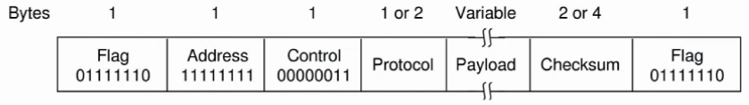

This is an Internet protocol.
The Internet uses PPP as the main data link protocol over p2p links.
PPP is also used in Asymmetric Digital Subscribe Line (ADSL) to connect homes to the Internet over old telephone services.
PPP is used on top of SONET.
PPP is not a reliable protocol, because there is no sequence number or ACK, because it leaves that work for protocols in higher OSI layers.
We do Byte stuffing in PPP.